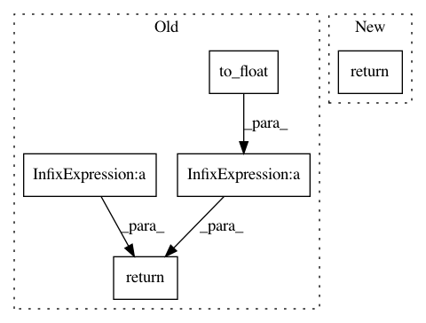

ecbe066e40882b166401b70ae9c4f1d535c93b12,texar/losses/adv_losses.py,,binary_adversarial_losses,#Any#Any#Any#Any#,12
Before Change
logits=fake_logits, labels=tf.zeros_like(fake_logits))
num_fake_data = tf.shape(fake_loss)[0]
ave_fake_loss = tf.reduce_sum(fake_loss) / tf.to_float(num_fake_data)
disc_loss = ave_real_loss + ave_fake_loss
if mode == "min_fake":
gen_loss = - ave_fake_loss
elif mode == "max_real":
fake_loss_ = tf.nn.sigmoid_cross_entropy_with_logits(
logits=fake_logits, labels=tf.ones_like(fake_logits))
gen_loss = tf.reduce_sum(fake_loss_) / tf.to_float(num_fake_data)
else:
raise ValueError("Unknown mode: %s. Only "min_fake" and "max_real" "
"are allowed.")
return gen_loss, disc_loss
After Change
else:
raise ValueError("Unknown mode: %s. Only "min_fake" and "max_real" "
"are allowed.")
return g_loss, d_loss
In pattern: SUPERPATTERN
Frequency: 4
Non-data size: 5
Instances
Project Name: asyml/texar
Commit Name: ecbe066e40882b166401b70ae9c4f1d535c93b12
Time: 2017-12-21
Author: zichaoy@cs.cmu.edu
File Name: texar/losses/adv_losses.py
Class Name:
Method Name: binary_adversarial_losses
Project Name: OpenNMT/OpenNMT-tf
Commit Name: 8cf731ddf4fd92bcda97921d8646d887199fb15a
Time: 2018-01-25
Author: guillaumekln@users.noreply.github.com
File Name: opennmt/utils/losses.py
Class Name:
Method Name: cross_entropy_sequence_loss
Project Name: deepchem/deepchem
Commit Name: a437991e12a334b40b082fdc8b1b6dcf4a68021f
Time: 2017-04-17
Author: bharath.ramsundar@gmail.com
File Name: deepchem/models/tensorgraph/layers.py
Class Name: NeighborList
Method Name: get_cells_for_atoms
Project Name: asyml/texar
Commit Name: 5ec08ed0e16d87c029bc5d9de46b95800d0bc470
Time: 2018-05-03
Author: shore@pku.edu.cn
File Name: texar/losses/mle_losses.py
Class Name:
Method Name: smoothing_cross_entropy